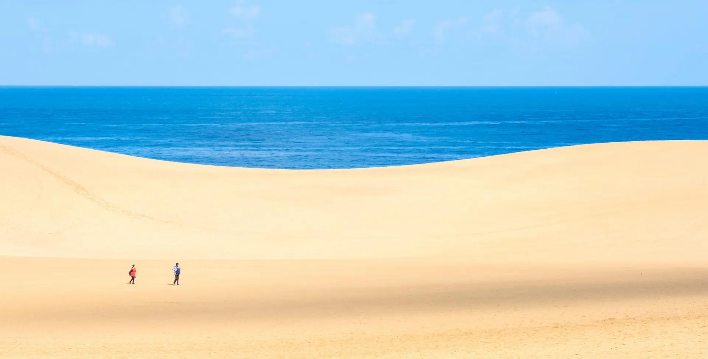

鳥取砂丘是怎樣的一個地方？

位於鳥取縣鳥取市靠日本海側的鳥取砂丘，東西長達16km・南北寬至2.4km，是日本最大規模的砂丘。
這個「砂丘」不只位於特別保護地區，更被指定為國家天然紀念物。
為了讓旅人能更深入了解鳥取砂丘，先簡單為大家說明砂丘與砂漠的差別：砂丘是由風吹動泥砂堆積形成的丘狀地形，砂漠則是由於降雨極端稀少，而由岩石與泥砂形成的土地。相對於砂漠，砂丘會降雨，也有植物生長。
鳥取砂丘也是在數千年的歲月裡，由海流與風將泥砂搬運至此而形成。其最大魅力，在於隨著時間不斷改變的景觀，以及大自然藉由砂丘呈現出的造型美。尤其是由鳥取砂丘遠眺朝陽與夕陽之美，更是名聞遐邇。
在這裡不光能夠徜徉砂丘之美，更備有從小孩到大人都能樂在其中的各種戶外活動，也是鳥取砂丘的一大魅力。
鳥取砂丘的7大看點
鳥取砂丘除了可觀賞雄偉的自然景觀外，還能欣賞砂與風所孕育出的造型美，以及運用自然資源進行的戶外活動。只要事先掌握各項看點，鳥取砂丘絕對是個能夠玩上一整天的好景點。接下來為大家介紹為了盡享鳥取砂丘樂趣而不可不知的嚴選看點。
運氣好的話就能遇見，砂丘上的「綠洲」
鳥取砂丘雖然無法生成水池，但在馬背南側的坡面底下，只要條件符合就會出現「綠洲」。
在降雨量較多的秋季至春季之間較常出現，有時水深可達1m。
若有幸見到平時很難一見的綠洲，不妨好好由近到遠欣賞綠洲的景象。